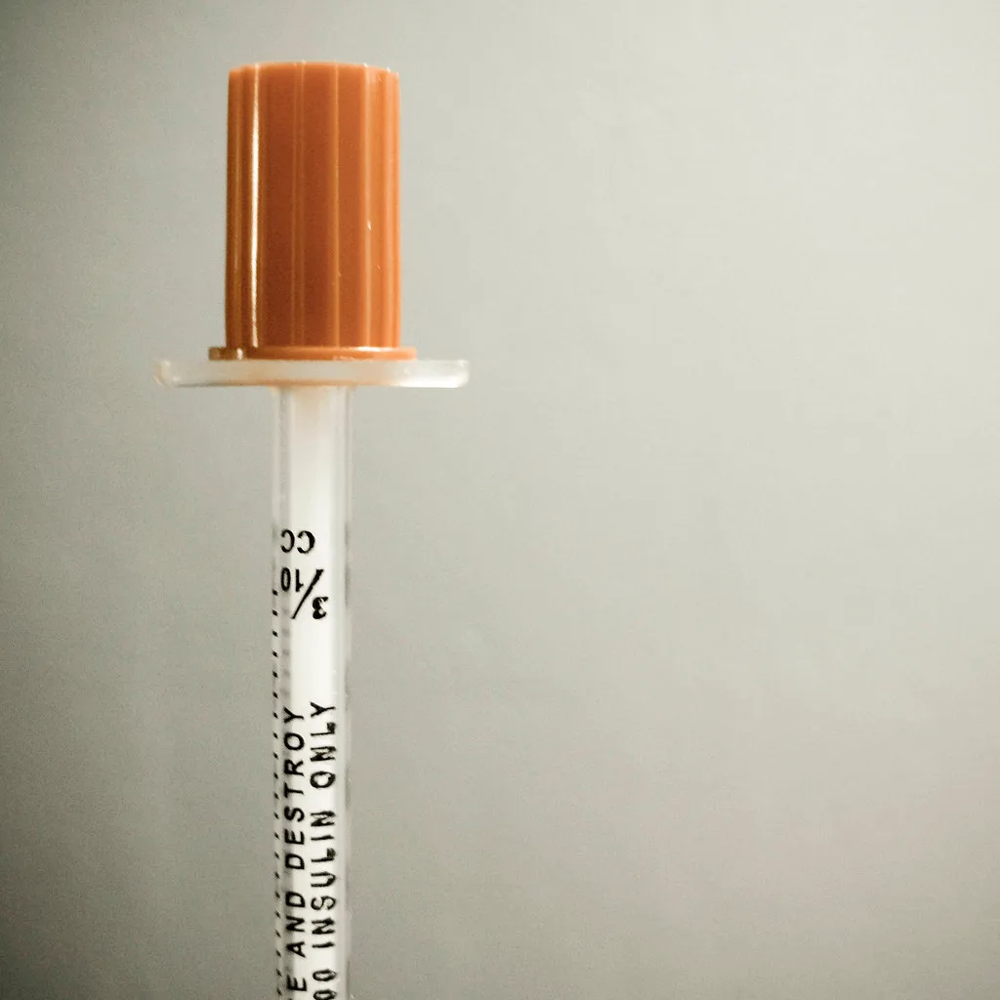
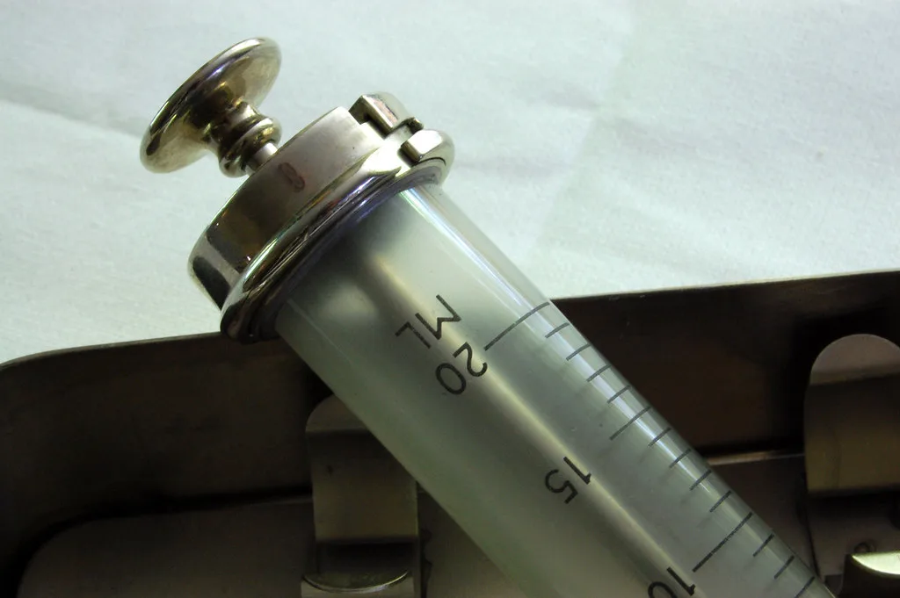

한미약품 비만치료제 '에페' 식약처 허가…국산 신약 45호 탄생
한미약품이 개발한 비만치료제 '에페오토인젝터주(성분명 에페글레나타이드)'가 식품의약품안전처로부터 품목허가를 받으며 국내 45번째 국산 신약으로 이름을 올렸다. 에페는 글루카곤 유사 펩타이드-1(GLP-1) 계열 주사형 비만치료제로, 국내 제약사가 자체 개발해 비만 치료 목적으로 허가받은 첫 GLP-1 신약이라는 점에서 의미가 크다. 그간 국내 비만치료제 시장은 노보노디스크의 위고비와 일라이릴리의 마운자로 등 해외 제약사 제품이 사실상 주도해왔는데, 이번 허가로 국산 신약이 본격적으로 경쟁에 합류하게 됐다.
에페는 순탄치 않은 과정을 거쳐 시장에 나오게 됐다는 점에서도 주목받는다. 한미약품은 2015년 이 물질을 글로벌 제약사 사노피에 기술수출했지만, 2020년 권리가 다시 한미약품으로 반환되는 우여곡절을 겪었다. 이후 자체 개발과 임상을 다시 추진해 5년여 만에 허가를 받아낸 셈이다. 식약처가 진행한 국내 임상 3상에서는 비만 성인 448명을 대상으로 40주간 투여한 결과, 에페 투여군의 평균 체중감소율이 9.75%로 나타나 위약군 대비 통계적으로 유의한 우월성을 보인 것으로 전해졌다.

현재 국내 비만치료제 시장은 마운자로와 위고비 두 제품이 사실상 양분하고 있는 구조다. 업계에 따르면 지난해 두 제품의 국내 매출은 각각 수천억 원대에 이르며 전체 시장의 약 86%를 차지한 것으로 알려졌다. 에페의 등장으로 이 시장이 양강 구도에서 3자 경쟁 구도로 재편될 가능성이 제기된다. 다만 실제 시장 점유율 변화는 공급 안정성과 가격 정책, 처방 데이터 축적 등 여러 변수에 따라 달라질 것으로 전망된다.
한미약품이 강조하는 차별화 포인트는 '한국인 임상 데이터'와 '자체 생산 체계'다. 해외 제품이 글로벌 임상 결과를 기반으로 국내에 들어온 것과 달리, 에페는 국내 환자를 대상으로 한 임상 데이터를 보유하고 있어 처방 과정에서 신뢰도를 높일 수 있다는 설명이다. 또한 평택 바이오플랜트를 통한 자체 생산이 가능해 공급 안정성과 가격 경쟁력을 동시에 확보할 수 있는 구조라는 점도 강점으로 꼽힌다. 한미약품은 아직 최종 공급가격을 공개하지 않았지만, 증권가에서는 기존 제품보다 저렴한 수준에서 가격이 책정될 가능성을 점치고 있다.

이번 허가는 국내 제약·바이오 업계 전반에도 적지 않은 파장을 줄 것으로 보인다. 글로벌 비만치료제 시장이 빠르게 커지는 가운데, 국내 기업이 독자 기술로 개발한 신약이 해외 빅파마 제품과 같은 시장에서 경쟁할 수 있음을 보여준 사례이기 때문이다. 업계에서는 에페의 상업적 성과가 향후 다른 국내 제약사들의 유사 계열 신약 개발 투자에도 영향을 줄 수 있다고 내다본다.
한미약품은 연내 에페의 국내 출시를 목표로 생산과 유통망 준비에 속도를 내고 있는 것으로 전해졌다. 다만 신약이 시장에서 실제로 자리 잡기까지는 처방 데이터 축적과 환자 접근성 확보, 안전성 모니터링 등 넘어야 할 과제도 남아 있다는 지적이 나온다. 업계 관계자들은 에페의 시장 진입이 국내 비만치료제 가격 구조와 처방 관행에 어떤 변화를 가져올지, 그리고 장기 복용 환자들의 치료 선택권이 얼마나 넓어질지 함께 지켜봐야 한다고 말한다.